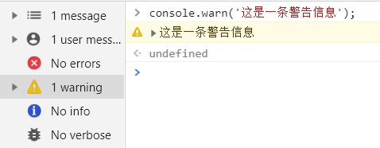

原文连接:https://www.cnblogs.com/tangshiwei/p/11962270.html
在我们的日常前端开发中，使用最频繁的莫过于使用console.log在浏览器的控制台中打印出我们需要调试的信息，但是大部分人可能跟之前的我一样，没有意识到其实console除了log方法以外，还有很多实用的方法，这些方法可以使我们的调试过程更加容易，也表达得更加直观，更加丰富多彩，下面我们就来看看有哪些实用的方法吧！
1、console.log()
我们经常会使用console.log来打印出某个变量的值或者某个实体对象，也可以传入多个变量参数，它会按照传入顺序进行打印：
1. 传入一个变量
const a = 1;
console.log(a); // -> 1
2. 传入一个对象
const foo = {a: 1};
console.log(foo); // -> {a: 1}
3. 传入多个变量
console.log(a, foo); // -> 1 {a: 1}
除此之外，它还支持格式化打印的功能，传入特定的占位符来对参数进行格式化处理，常见的占位符有以下几种：
%s：字符串占位符%d：整数占位符%f：浮点数占位符%o：对象占位符(注意是字母o，不是数字0)%c: CSS样式占位符
const string = 'Glory of Kings';
const number = 100;
const float = 9.5;
const obj = {name: 'daji'};
1、%s 字符串占位符
console.log('I do like %s', string); // -> I do like Golry of Kings.
2、%d 整数占位符
console.log('I won %d times', number); // -> I won 100 times.
3、%f 浮点数占位符
console.log('My highest score is %f', float); // -> My highest score is 9.5
4、%o 对象占位符
console.log('My favorite hero is %o', obj); // -> My favorite hero is {name: 'daji'}.
5、%c CSS样式占位符
console.log('I do like %c%s', 'padding: 2px 4px;background: orange;color: white;border-radius: 2px;', string);
其中CSS样式占位符效果如下：
2、console.warn()
你可以完全使用console.warn来代替console.log方法，但前提是该条打印信息是属于警告级别而不是普通信息级别，因此浏览器遇到一条警告级别的信息会区别对待，最明显的是它的左侧会有一个警告图标，并且背景色和文字颜色也会不一样。

相比于普通信息，警告信息会出现在上图左侧的warning面板中，而不是info面板中，这样也有助于我们在一堆打印信息中快速筛选出警告信息，方便查看。
3、console.dir()
在大多数情况下，console.dir方法的作用和console.log作用相似，但是有一点细微的差别。
在上图中，我们可以看到，console.log方法会将打印结果的详细信息显示完整，但是console.dir方法只会打印出对象，不会展开详细信息，当然点击之后看到的信息和前者一样。
唯一差异比较大的地方是当我们打印HTML文档中的节点时，会有完全不一样的表现形式。例如我们使用console.log来打印body标签：
我们会方便地看到DOM结构，并且鼠标移上去能够帮我们自动定位到对应的DOM节点。但是在某些情况下，其实这并不是你想要看到的效果，或许你想看到的是该DOM节点下的所有属性信息，那么你可以尝试使用console.dir方法来试试：
4、console.table()
在我们的项目开发中经常会遇到对象数组形式的列表数据，在调试过程中我们可能会使用console.log方法打印出这些数据来进行查看，但比起前者，还可以使用一种比较可视化的方式来进行打印。例如，这里准备一些列表数据：
const response = [
{
id: 1,
name: 'Marry',
age: 18,
sex: 0
},
{
id: 2,
name: 'John',
age: 20,
sex: 1
}
];
然后我们使用console.log来进行打印：
可以看出，我们打印出的结果并不够直接，没有给人一种一目了然的效果，接着换着使用console.table来打印：
可以看到，我们的列表数据被清晰完整地展现在了表格当中，同时console.table提供第二个可选参数用于筛选表格需要显示的列，默认为全部列都显示。
上图我们通过添加第二个参数，数组中为需要在表格中显示的字段名，这样就很方便地在结果数据中过滤掉我们不需要关心的信息。
5、console.assert()
assert即断言，该方法接收多个参数，其中第一个参数为输入的表达式，只有在该表达式的值为false时，才会将剩余的参数输出到控制台中。
上图中的第二行因为arr.length > 5值为false，因此打印出后面的信息。如果在某些场景下你需要评估当前的数据是否满足某个条件，那么不妨使用console.assert()方法来在控制台中查看断言信息。
6、console.trace()
该方法用于在控制台中显示当前代码在堆栈中的调用路径，通过这个调用路径我们可以很容易地在发生错误时找到原始错误点，示例如下：
function foo(data) {
if (data === null) {
console.trace();
return [];
}
return [data.a, data.b];
}
function bar1(data) {
return foo(data);
}
function bar2(data) {
return foo(data);
}
bar1({a: 1, b: 2}); // -> [1, 2]
bar2(null); // -> []
在上面代码中，我们分别在bar1和bar2函数中调用foo函数并传入不同的参数，很显然bar2函数在执行时会进入if语句并执行console.trace()方法，以下是控制台中打印结果：
可以看到自下而上的一条调用路径，并可以快速判定是在bar2函数中传入了不合适的参数null而导致出错，方便我们跟踪发生错误的原始位置。
7、console.count()
该方法相当于一个计数器，用于记录调用次数，并将记录结果打印到控制台中。其接收一个可选参数console.count(label)，label表示指定标签，该标签会在调用次数之前显示，示例如下：
for (let i = 1;i <= 5;i++) {
if (!(i % 2)) {
console.count('even');
} else {
console.count('odd');
}
}
代码中如果i是偶数，则会对even计数器进行计数，否则对odd计数器进行计数，执行后我们会在控制台中看到如下列表：
odd: 1
even: 1
odd: 2
even: 2
odd: 3
8、console.time() & console.timeEnd()
这两个方法一般配合使用，是JavaScript中用于跟踪程序执行时间的专用函数，console.time方法是作为计算的起始时间，console.timeEnd是作为计算的结束时间，并将执行时长显示在控制台。如果一个页面有多个地方需要使用到计算器，则可以为方法传入一个可选参数label来指定标签，该标签会在执行时间之前显示。在以往我们计算程序的执行时间时，我们一般会采用如下方式：
const startTime = performance.now();
let sum = 0;
for(let i = 0;i < 100000;i++) {
sum += i;
}
const diffTime = performance.now() - startTime;
console.log(`Execution time: ${ diffTime }`);
这是一种比较传统的做法，我们还可以使用console.time来实现：
console.time('sum');
let sum = 0;
for(let i = 0;i < 100000;i++) {
sum += i;
}
console.timeEnd('sum');
控制台效果如下： 相比于第一种实现方式，我们没有设置任何临时变量并且没有做任何计算。
9、console.group() & console.groupEnd()
顾名思义，对数据信息进行分组，其中console.group()方法用于设置分组信息的起始位置，该位置之后的所有信息将写入分组，console.groupEnd()方法用于结束当前的分组，示例如下：
class MyClass {
constructor() {
console.group('Constructor');
console.log('Constructor executed');
this.init();
console.groupEnd();
}
init() {
console.group('init');
console.log('init executed');
console.groupEnd();
}
}
const myClass = new MyClass();
控制台效果如下： 该方法的作用主要是让我们在控制台打印的日志更加清晰可读。
10、浏览器转为编辑器
在大部分情况下，我们在浏览器中调试DOM结构或者编辑一些文本时，会在Chrome Developer Tools的Elements选项中对DOM节点进行编辑，但是一旦节点过多，会很容易增加调试过程的困难，这里我们可以使用一种方式来将浏览器直接转换为编辑器模式：
document.body.contentEditable = true;
在控制台中输入以上代码后，可以将浏览器中的所有内容变为可编辑状态，效果图如下：

11、Chrome Command Line API
Google的Chrome Command Line API包含了一个用于执行以下常见任务的便捷函数集合：选择和检查DOM元素，以可读格式显示数据，停止和启动分析器，以及监控DOM事件。
注意：此API只能通过浏览器控制台获取，无法通过网页脚本来进行访问。
11.1 选择DOM元素
当我们使用jQuery的时候，我们可以通过各种选择器例如$('#id')和$('.class')来选择匹配的DOM元素，但是如果我们没有引入jQuery时，我们仍然可以在Chrome的控制台中进行同样的操作。Chrome Command Line API提供了以下几种选择DOM元素的方式：
$(selector)：返回匹配指定CSS选择器的DOM元素的第一个引用，相当于document.querySelector()函数。$$(selector)：返回匹配指定CSS选择器的DOM元素数组，相当于document.querySelectorAll()函数。$x(path)：返回一个与给定XPath表达式匹配的DOM元素数组。
$x('//p[a]')表示返回包含
<a>元素的所有<p>元素。
11.2 检索最后一个结果的值
在控制台中我们经常会进行一些计算，某些情况下你可能需要跟踪你之前的计算结果来用于后面的计算，使用$_标记可用于返回最近评估的表达式的值，示例如下：
1 + 2 + 3 + 4 // -> 10
$_ // -> 10
$_ * $_ // -> 100
Math.sqrt($_) // -> 10
$_ // -> 10
11.3 查找与指定DOM元素关联的事件
当我们需要查找DOM中与某个元素关联的所有事件时，控制台提供了getEventListeners方法来帮助我们找到这些关联的事件。
getEventListeners($('selector'))返回在指定DOM元素上注册的事件监听器。返回值是一个对象，对象的key为对应的事件类型(例如click，focus)，对象的value为一个数组，其包含了对应事件类型下的所有事件监听器。例如，下面列出了在document上注册的所有事件监听器：
如果我们需要找到某个特定的事件监听器，可以通过如下方式进行访问：
// eventName表示对应的事件类型
// index表示该事件类型下的事件监听器数组的索引
getEventListeners($('selector')).eventName[index].listener
// 例如获取document下click事件监听器数组的第一项
getEventListeners(document).click[0].listener
11.4 监控事件
如果你希望在执行绑定到DOM中特定元素的事件时监视它们，控制台提供了monitorEvents方法来帮助你使用不同的命令来监控其中的一些或者所有事件：
monitorEvents($('selector'))：将监视与选择器匹配的元素关联的所有事件，当这些事件被触发时会将它们打印到控制台。例如monitorEvents($('#content'))将监视id为content的元素关联的所有事件。monitorEvents($('selector'), 'eventName')：将监视选择器匹配的元素的某个特定的事件。 例如，monitorEvents($('#content'), 'click')将监视id为content的元素关联的click事件。monitorEvents($('selector'), [eventName1, eventName2, ...])：将监视选择器匹配的元素的某些特定的事件。与上述不同的是，第二项可以传入一个字符串数组，包含所有需要监听的事件类型名称，以此达到自定义监听的目的。例如monitorEvents($('#content'), ['click', 'focus'])将监视id为content的元素关联的click和focus事件。unmonitorEvents($('selector'))：将停止监视选择器匹配的元素关联的所有事件。例如unmonitorEvents($('#content'))将停止监视id为content的元素关联的所有事件。
效果图如下：
11.5 检查DOM元素
控制台提供了inspect()方法让我们可以直接从控制台中检查一个DOM元素。
inspect($('selector'))：将检查与选择器匹配的元素，并且会自动跳转到Chrome Developer Tools的Elements选项卡中。例如inspect($('#content'))将检查id为content的元素。
效果图如下：
交流
这篇主要是分享了几个笔者觉得不错的console调试技巧，希望在你的前端代码调试过程中能对你有所帮助，觉得文章不错的话，欢迎关注笔者的公众号，每周都会原创和整理一些前端技术干货，希望和大家一起互相交流学习，共同进步。
文章已同步更新至Github博客，若觉文章尚可，欢迎前往star！
你的一个点赞，值得让我付出更多的努力！
逆境中成长，只有不断地学习，才能成为更好的自己，与君共勉！